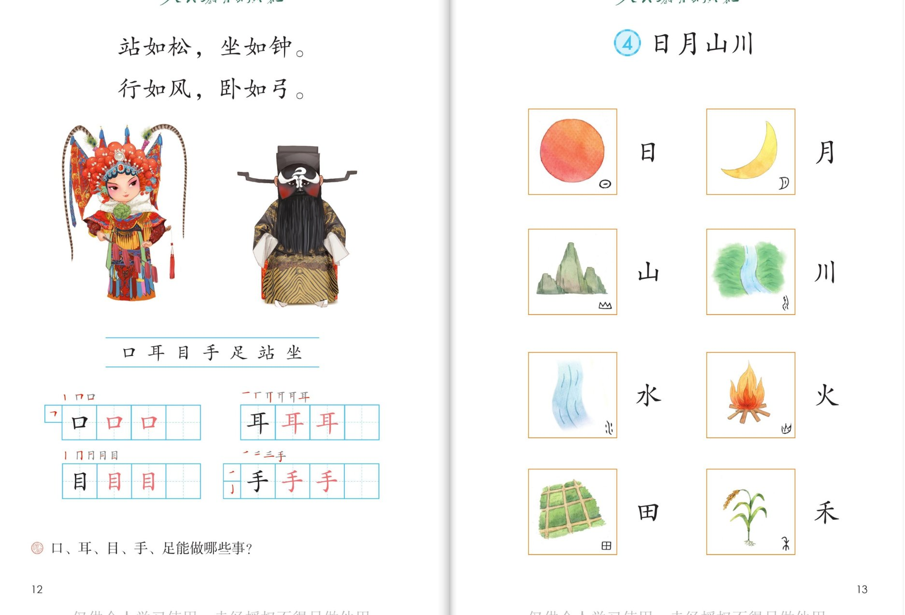
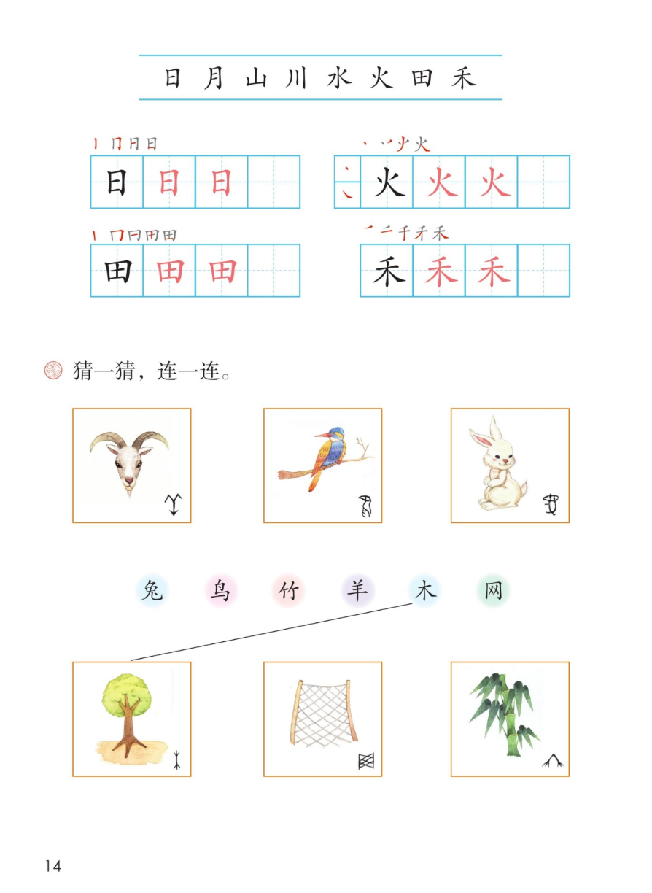

×
🔊 手机听不到声音怎么办？
① 先把手机
媒体音量调大 ，确认没开静音、没连蓝牙耳机；在微信里打开的，点右上角「⋯ → 用浏览器打开」。
② 还是没声音？到应用商店免费下载
Microsoft Edge 浏览器 （它自带朗读发声），用它打开本页面就能出声。
③ 换了 Edge 仍然没声音，说明这部手机的
硬件/系统不支持 网页朗读（多为老旧机型）；近几年买的新手机一般都能正常播放。
→ 打开声音自检
统编版 · 一年级上册 · 第一单元 · 识字
第 4 课 · 日月山川
看图认字，猜一猜古人怎么造字
会认 8 字 会写 4 字 猜一猜连一连 闯关 8 题
这一课学什么： 八个看图认的字——日、月、山、川、水、火、田、禾，每张图的角落里还藏着古文字。
课本还让我们猜一猜，连一连 。页面上的拼音按字典标注，供参考，以课本和老师教的为准。
课本第 13 页 点卡听读，注意角落里的古文字
🔊 八个字连起来读
课本第 14 页拼音条 点字卡听读音和组词
课本第 14 页田字格 日 田 火 禾（后一个为描红）
课本第 14 页 课本连线题，先自己猜，再点开听答案
课本原题 · 猜一猜，连一连
上面一排图：山羊、小鸟、兔子；下面一排字：兔 鸟 竹 羊 木 网 。课本已连好例子：木 → 大树 。
💡 先自己指一指、连一连，再点下面的卡片对答案。
小知识： 照着东西的样子画出来的字，叫象形字 ——日、月、山、川、水、火、田、禾都是。古人先画画，再慢慢写成字。
点题目可以听题，点选项就判对错，答完自动算分
已经答 0 题，答对 0 题。
点图放大

第 13 页 · 日月山川看图认字

第 14 页 · 写一写 · 猜一猜连一连